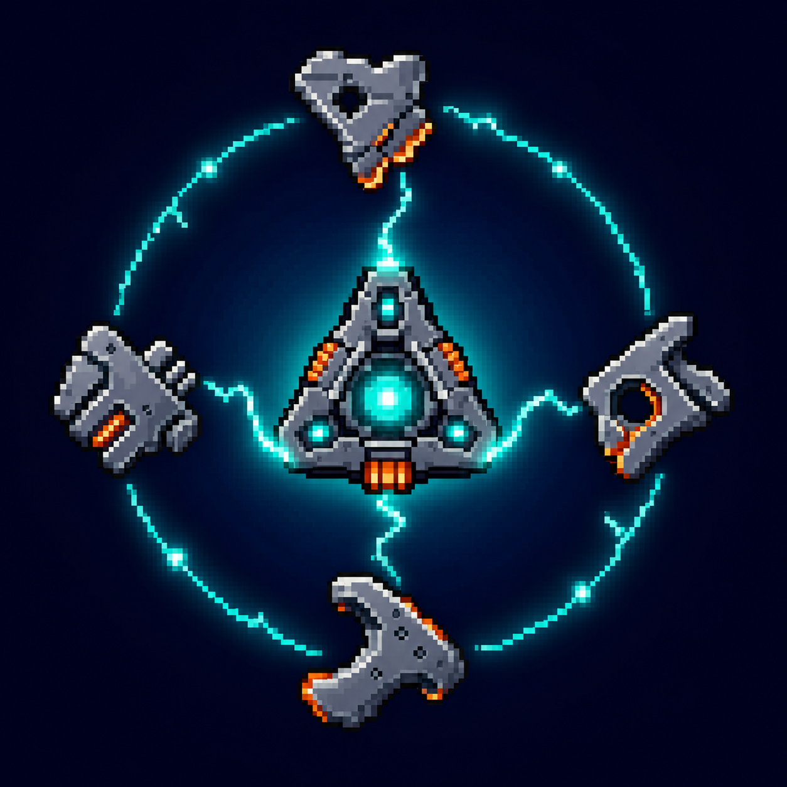

Unity 2022.3 + DOTS + URP
猪猪大作战 / Mobile RTS
移动端横屏 RTS 面试作品，围绕 ECS 架构、Flow Field 群体寻路、程序化地形、战争迷雾、兵营产兵和道具经济构建。
- 使用 ECS System 承担单位移动、地形生成、兵营产兵、战斗接触销毁等批处理逻辑。
- Flow Field 支持多单位共享寻路结果，并处理障碍边界、阵型停车和重复指令抖动。
- 保留 MonoBehaviour 层处理摄像机、输入、UI、动画桥接和低频经济服务，边界清晰。
Selected Projects
每个项目都保留视频演示和面试讲解要点，重点放在我做了什么、为什么这样做、能体现什么工程能力。
Unity 2022.3 + DOTS + URP
移动端横屏 RTS 面试作品，围绕 ECS 架构、Flow Field 群体寻路、程序化地形、战争迷雾、兵营产兵和道具经济构建。

First Playable Vertical Slice
太空废料生存动作 Demo，包含磁吸废料、轨道环绕、释放投掷、自动攻击、敌人波次、升级选择和运行时 UI。
Interview Focus
结合实际演示讲玩法循环、输入反馈、战斗表现和运行时状态流。
讲系统拆分、服务边界、数据结构、测试与项目可维护性。
讲 Entity、Component、System、Hybrid 渲染桥接和结构性变更经验。
讲 Cost / Integration / Flow Field，以及群体移动、障碍和阵型处理。
讲 HUD、升级选择、背包商店、触控面板和数据刷新方式。
讲分帧启动、对象池、批处理、GPU Instancing 和调试取舍。